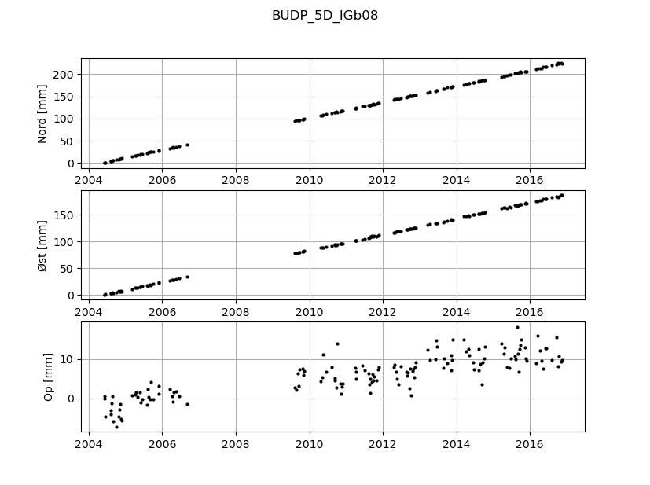

fire ts
Kommandogruppen fire ts indeholder værktøjer til indlæsning af data fra forskellige kilder.
Usage: fire ts [OPTIONS] COMMAND [ARGS]...
Håndtering af koordinattidsserier.
Options:
--help Show this message and exit.
Commands:
analyse-gnss Analysér tidsserie for én eller flere GNSS stationer.
analyse-hts Analysér en eller flere Højdetidsserier.
gnss Udtræk en GNSS tidsserie.
hts Udtræk en Højdetidsserie.
plot-gnss Plot en GNSS tidsserie.
plot-hts Plot en Højdetidsserie.
fire ts gnss
Udtræk en GNSS tidsserie.
"OBJEKT" sættes til enten et punkt eller en søgetekst på tidsserienavn.
Hvis "OBJEKT" er et punkt udskrives en oversigt over de tilgængelige tidsserier til
dette punkt.
Ellers søges der blandt alle tidsserier, hvor "OBJEKT" indgår i navnet. -s/--srid kan
bruges til at filtrere yderligere på srid.
Findes der flere tidsserier, skrives en oversigt over dem, og hvis der kun findes én
tidsserie udskrives tidsserien på skærmen. Hvilke parametre der udskrives kan
specificeres i en kommasepareret liste med --parametre. Følgende parametre kan
vælges:
| t Tidspunkt for koordinatobservation
| x Koordinatens x-komponent (geocentrisk)
| sx x-komponentens spredning (i mm)
| y Koordinatens y-komponent (geocentrisk)
| sy y-komponentens spredning (i mm)
| z Koordinatens z-komponent (geocentrisk)
| sz z-komponentens spredning (i mm)
| X Koordinatens x-komponent (geocentrisk, normaliseret)
| Y Koordinatens y-komponent (geocentrisk, normaliseret)
| Z Koordinatens z-komponent (geocentrisk, normaliseret)
| n Normaliseret nordlig komponent (topocentrisk)
| e Normaliseret østlig komponent (topocentrisk)
| u Normaliseret vertikal komponent (topocentrisk)
| decimalår Tidspunkt for koordinatobservation i decimalår
| obslængde Observationslængde givet i timer
| kkxx Koordinatkovariansmatricens XX-komponent
| kkxy Koordinatkovariansmatricens XY-komponent
| kkxz Koordinatkovariansmatricens XZ-komponent
| kkyy Koordinatkovariansmatricens YY-komponent
| kkyz Koordinatkovariansmatricens YZ-komponent
| kkzz Koordinatkovariansmatricens ZZ-komponent
| rkxx Residualkovariansmatricens XX-komponent
| rkxy Residualkovariansmatricens XY-komponent
| rkxz Residualkovariansmatricens XZ-komponent
| rkyy Residualkovariansmatricens YY-komponent
| rkyz Residualkovariansmatricens YZ-komponent
| rkzz Residualkovariansmatricens ZZ-komponent
Tidsserien kan skrives til en fil ved brug af --fil, der resulterer i
en csv-fil på den angivne placering. Denne fil kan efterfølgende åbnes
i Excel, eller et andet passende program, til videre analyse.
Vis alle tidsserier for punktet TILS:
fire ts gnss TILS
Vis alle tidsserier hvor 'LS' indgår i navnet, og som har referencerammen IGb08:
fire ts gnss LS --srid IGb08
Vis tidsserien 'TILS_5D_IGb08' med standardparametre:
fire ts gnss TILS_5D_IGb08
Vis tidsserie med brugerdefinerede parametre:
fire ts gnss TILS_5D_IGb08 --parametre decimalår,n,e,u,sx,sy,sz
Gem tidsserie med samtlige tilgængelige parametre:
fire ts gnss TILS_5D_IGb08 -p alle -f TILS_5D_IGb08.xlsx
Usage
fire ts gnss [OPTIONS] [OBJEKT]
Options
- -p, --parametre <parametre>
Vælg hvilke parametre i tidsserien der skal udtrækkes. Som standard sat til 't,x,sx,y,sy,z,sz'. Bruges værdien 'alle' udtrækkes alle mulige parametre i tidsserien. Se
fire ts gnss --helpfor yderligere detaljer.
- -f, --fil <fil>
Skriv den udtrukne tidsserie til Excel fil.
- -s, --srid <srid>
Filtrer tidsserier på srid. Fx -s IGb08.
- --db <db>
Vælg en specifik databaseforbindelse - default_connection i fire.ini bruges hvis intet vælges.
- Options:
prod | test
- -m, --monokrom
Vis ikke farver i terminalen
- --debug
Vis debug output fra FIRE-databasen.
- --help
Vis denne hjælp tekst
Arguments
- OBJEKT
Optional argument
fire ts plot-gnss
Plot en GNSS tidsserie.
Et simpelt plot der som standard viser udviklingen i nord, øst og op retningerne over tid.
Vælges plottypen konf vises som standard kun Op-retningen.
Plottes kun én enkelt tidsserieparameter vises for plottyperne fit og konf også
værdien af fittets hældning.
"TIDSSERIE" er et GNSS-tidsserie ID fra FIRE. Eksisterende GNSS-tidsserier kan
fremsøges med kommandoen fire ts gnss <punktnummer>.
Hvilke parametre der plottes kan specificeres i en kommasepareret liste med --parametre.
Højst 3 parametre plottes. Følgende parametre kan vælges:
| t Tidspunkt for koordinatobservation
| x Koordinatens x-komponent (geocentrisk)
| y Koordinatens y-komponent (geocentrisk)
| z Koordinatens z-komponent (geocentrisk)
| X Koordinatens x-komponent (geocentrisk, normaliseret)
| Y Koordinatens y-komponent (geocentrisk, normaliseret)
| Z Koordinatens z-komponent (geocentrisk, normaliseret)
| n Normaliseret nordlig komponent (topocentrisk)
| e Normaliseret østlig komponent (topocentrisk)
| u Normaliseret vertikal komponent (topocentrisk)
| decimalår Tidspunkt for koordinatobservation i decimalår
Typen af plot som vises kan vælges med --plottype. Følgende plottyper kan vælges:
| rå Plot rå data
| fit Plot lineær regression oven på de rå data
| konf Plot lineær regression med konfidensbånd
EKSEMPLER
Plot af 5D-tidsserie for BUDP:
fire ts plot-gnss BUDP_5D_IGb08
Resulterer i visning af nedenstående plot.
{kind=link}
Plot af 5D-tidsserie for SMID:
fire ts plot-gnss SMID_5D_IGb08 -p X,Y -t fit
Resulterer i visning af nedenstående plot.
{kind=link}
Plot af 5D-tidsserie for TEJH:
fire ts plot-gnss TEJH_5D_IGb08 -t konf
Resulterer i visning af nedenstående plot.
{kind=link}
Usage
fire ts plot-gnss [OPTIONS] TIDSSERIE
Options
- -t, --plottype <plottype>
Hvilken type plot vil man se?
- Options:
rå | fit | konf
- -p, --parametre <parametre>
Hvilken parameter skal plottes? Vælges flere plottes max de tre første.
- --db <db>
Vælg en specifik databaseforbindelse - default_connection i fire.ini bruges hvis intet vælges.
- Options:
prod | test
- -m, --monokrom
Vis ikke farver i terminalen
- --debug
Vis debug output fra FIRE-databasen.
- --help
Vis denne hjælp tekst
Arguments
- TIDSSERIE
Required argument
fire ts analyse-gnss
Analysér tidsserie for én eller flere GNSS stationer.
Der beregnes som udgangspunkt et lineært fit til tidsserierne, der sammenlignes med en
uplift-model og derefter vises i et detaljeret plot med konfidensbånd og diverse andre
kvalitetsparametre for fittet. Resultaterne gemmes i csv-format hvis en sti angives
med --fil.
Alle tidsserieparametre som er indeholdt i FIRE kan analyseres. Af størst relevans er
Op-retningen (u), men der kan også vælges de andre geografiske dimensioner nord og
øst, samt de geocentriske x, y eller z. Vælger man at analysere Op-retningen, så
sammenligner programmet hældningen af den fittede linje med en reference-hældning
givet ved uplift-modellen "DTU 2016" af Per Knudsen. En alternativ uplift-model kan
angives enten for hvert punkt på listeform eller i griddet format (tif-fil).
Idéen med at sammenligne med en uplift-model er, at identificere eventuelle lokale bevægelser som ikke indfanges af uplift-modellen.
Sammenligningen foretages ved statistisk hypotesetest, som vurderer sandsynligheden
for om den modellerede hældning er lig referencehældningen. Hertil anvendes
signifikansniveauet alpha.
Konfidensintervaller- og bånd for regressionsparametrene hhv. -linjen anvender
ligeledes signifikansniveauet alpha.
Analyseres mere end 1 tidsserie betegnes samlingen af disse som et tidsserie-ensemble
og der beregnes en samlet usikkerhed af ensemblets observationer. Den "samlede"
usikkerhed anvendes så til genberegning af statistiske tests og parametre. Kun
tidsserier som er i samme referenceramme kan analyseres (default er IGb08).
Tuning:
Analyseresultaterne kan tunes med parametrene:
| binsize Tag gennemsnit af datapunkter som er tættere på hinanden end
| binsize. For detaljer se dokumentation af
| GNSSTidsserie.binning.
| min_antal_punkter Minimum antal punkter i tidsserien.
| alpha Signifikansniveau for konfidensintervaller og hypotesetests.
Rationale bag binning:
Tidsserierne består af data ujævnt spredt i tid. Derfor kan man komme ud for at en tidsserie består en gruppe af data som er tæt på hinanden i tid, samt af nogle få punkter som ligger mere spredt. Tidsperioden med den lille gruppe punkter som ligger tæt vil derfor have en større vægt en resten af punkterne, når man estimerer sin lineære model. Binning-proceduren er derfor en måde at reducere data/downsample de perioder hvor der er mange punkter. Derudover vil midlingen af punkterne inden for en "bin" også udjævne tilfældige fejl i data.
Bemærk at der ikke er tale om interpolation eller gridding af data.
Rationale bag tidsserie-ensembler:
Idet at man på kort tidsskala (år) antager en lineær trend i et givent punkts bevægelse (inklusive modelleret landbevægelse og lokale sætninger), kan afvigelserne (residualerne) mellem observationerne og den fittede linje, tolkes som måleusikkerheden forbundet med observationerne. (NB! Tager ikke højde for eventuelle periodiske signaler eller (sjovt nok) ulinære tendenser.) Dette kræver, at observationerne som indgår i tidsserien så vidt muligt er målt på samme måde og efter samme standarder, herunder GNSS-antenne/modtager, måletid etc.
Denne antagelse er vigtig for at kunne analysere et tidsserie-ensemble som helhed. Idéen med dette er, at bruge residualerne fra alle tidsserierne i ensemblet til at estimere en generel, samlet måleusikkerhed for observationerne i ensemblet. (se også https://en.wikipedia.org/wiki/Pooled_variance). NB! Igen er det vigtigt at man sikrer sig at hver observation i hver tidsserie som indgår i ensemblet er målt på samme måde.
Idet flere observationer indgår i estimeringen af denne samlede varians, vil denne være "bedre bestemt" end variansen for den enkelte tidsserne, og dette betyder at man med større statistisk sikkerhed kan drage konklusioner om GNSS-punkternes bevægelser.
Formler bag analyse-gnss:
Generelt søges der på et lineært ligningssystem et estimat:
\(\hat{\beta}=\begin{bmatrix} \hat{\beta}_0 & \hat{\beta}_1 & ··· &
\hat{\beta}_{M-1}\end{bmatrix}^T\), hvor \(M\) er antallet af modelparametre (i
kildekoden bruges betegnelsen ddof, efter det engelske "delta degrees of freedom",
for at skabe konsistens med de anvendte biblioteker numpy og scipy).
Det lineære ligningssystem repræsenteres på matrixform som:
Det følgende tager udgangspunkt i, at der fittes en ret linje, dvs. \(M=2\), hvilket er programmets standardindstilling. I så fald ser designmatricen \(\mathbf{A}\) ud på følgende måde:
hvor \({x_i}\) er den forklarende variabel og \({N}\) er antallet af datapunkter.
Observationerne er givet ved vektoren \(\mathbf{y}\):
Residualerne er da:
Summen af kvadrerede residualer betegnes som:
Løsningen vurderes ud fra bestemmelseskoefficienten \({R^2}\):
Antallet af frihedsgrader angives \(\text{dof}\):
Den estimerede varians af residualerne \(\sigma_0^2\) bestemmes ud fra \(\text{MSE}\) (Mean Squared Error):
Kovariansmatricen af de estimerede parametre \(\mathbf{\Sigma} (\hat{\beta})\) er bestemt ved:
Konfidensintervallet \(\text{KI}\) for de estimerede parametre kan nu beregnes med signifikansniveau \(\alpha\) som:
hvor \(T_{1-\alpha/2}\) er \(100·(1-\alpha/2)\) -fraktilen for en t-fordeling med \(\text{dof}\) antal frihedsgrader.
Konfidensbånd
Prædiktioner med modellen for et vilkårligt prædiktionspunkt \(x_p\) er givet ved:
Et mål for sikkerheden af prædiktionen er konfidensbåndet. Denne beregnes for punktet \(x_p\) som:
Hypotesetest
Hypotesetests foretages med følgende nulhypotese:
Den modellerede terrænhastighed \(\hat{\beta}_1\) er lig reference-hastigheden \(v\)
For Op-retningen er \(v\) givet ved en uplift-model. Den alternative hypotese er nulhypotesens inverse:
Den modellerede terrænhastighed \(\hat{\beta}_1\) er forskellig fra reference-hastigheden \(v\)
Dette formuleres matematisk som:
Test-scoren betegnes enten som \(t\) eller \(z\) afhængigt af om der foretages t- eller z-test. Begge test-scorer beregnes som:
Nulhypotesen \(H_0\) accepteres hvis \(t\lt T_{1-\alpha/2}\) (eller \(z\lt Z_{1-\alpha/2}\)). Ellers forkastes nulhypotesen og den alternative hypotese må accepteres.
Samlet varians
Den samlede varians \(\sigma_{samlet}^2\) beregnes som et vægtet gennemsnit af den estimerede varians \(\sigma_{0,j}^2\) for hver tidsserie \(j=1\,..N_{ts}\) som indgår i ensemblet:
hvor \(\text{dof}_j\) er antallet af frihedsgrader for hver tidsserie \(j\). Den samlede varians kan nu erstatte \(\sigma_0^2\) i de ovenstående formler, hvorved de statistiske størrelsers "samlede" udgave opnås. Dette indebærer antagelsen om, at \(\sigma_{samlet}^2\) er estimatet af populationens varians og ikke sample-variansen som er \(\sigma_{0}^2\). Dette gør os i stand til, i hypotesetest og konfidensintervaller at anvende en normalfordeling med fraktilen \(Z_{1-\alpha/2}\) som er uafhængig af antal frihedsgrader, i stedet for en t-fordeling med fraktilen \(T_{1-\alpha/2}\).
Usage
fire ts analyse-gnss [OPTIONS] [TS_LISTE]
Options
- --ts-fil <ts_fil>
Sti til fil med liste af tidsserier som skal analyseres. TidsserieID'erne i filen skal være adskilt af linjeskift. (\n)
- --parameter <parameter>
Vælg hvilken tidsserieparameter der skal undersøges, fx u for ellipsoidehøjde.
- -f, --fil <fil>
Skriv beregnet tidsseriestatistik til csv-fil.
- --uplift-station <uplift_station>
Sti til uplift-data for hver station. Hvis de(n) valgte station ikke findes, interpoleres uplift-raten ud fra
--uplift-grid. Formatet af filen skal væreGNSSNR, LON, LAT, UPLIFTRATE \n.
- --uplift-grid <uplift_grid>
Sti til griddet uplift-data. NB! Default-modellen "DTU 2016" af Per Knudsen dækker området fra 54.1-58°N og 7.7-13.1°E og er dermed ikke gyldig over Bornholm.
- --min-antal-punkter <min_antal_punkter>
Minimum antal punkter i tidsserien.
- --alpha <alpha>
Signifikansniveau for statistiske tests og konfidensintervaller.
- --binsize <binsize>
Hvis antal dage mellem datapunkter er mindre end binsize findes gennemsnit af datapunkterne.
- --grad <grad>
Vælg graden af polynomiet som fittes til data. Bruges sjældent.
- --referenceramme <referenceramme>
Vælg tidseriernes referenceramme.
- --alle
Sættes dette flag, bliver
--ts-listeog--ts-filignoreret og alle GNSS-stationer med 5D tidsserier i den valgte referenceramme analyseres.
- --plot, --no-plot
Vælg om plots skal vises eller ej.
- --db <db>
Vælg en specifik databaseforbindelse - default_connection i fire.ini bruges hvis intet vælges.
- Options:
prod | test
- -m, --monokrom
Vis ikke farver i terminalen
- --debug
Vis debug output fra FIRE-databasen.
- --help
Vis denne hjælp tekst
Arguments
- TS_LISTE
Optional argument
fire ts hts
Udtræk en Højdetidsserie.
"OBJEKT" sættes til enten et punkt eller en søgetekst på tidsserienavn.
Hvis "OBJEKT" er et punkt udskrives en oversigt over de tilgængelige tidsserier til
dette punkt.
Ellers søges der blandt alle tidsserier, hvor "OBJEKT" indgår i navnet. Findes der
flere tidsserier, skrives en oversigt over dem, og hvis der kun findes én tidsserie
udskrives tidsserien på skærmen. Hvilke parametre der udskrives kan specificeres i en
kommasepareret liste med --parametre. Følgende parametre kan vælges:
| t Tidspunkt for koordinatobservation
| decimalår Tidspunkt for koordinatobservation i decimalår
| kote Koordinatens z-komponent
| sz z-komponentens (kotens) spredning (i mm)
Tidsserien kan skrives til en fil ved brug af --fil, der resulterer i
en csv-fil på den angivne placering. Denne fil kan efterfølgende åbnes
i Excel, eller et andet passende program, til videre analyse.
Vis alle tidsserier for punktet SUL3:
fire ts hts SUL3
Vis alle tidsserier hvor '81103' indgår i navnet::
fire ts hts 81103
Vis tidsserien SUL3_HTS_81103 med standardparametre:
fire ts hts SUL3_HTS_81103
Vis tidsserie med brugerdefinerede parametre:
fire ts hts SUL3_HTS_81103 --parametre decimalår,kote,sz
Gem tidsserie med samtlige tilgængelige parametre:
fire ts hts SUL3_HTS_81103 -p alle -f SUL3_HTS_81103.xlsx
Usage
fire ts hts [OPTIONS] OBJEKT
Options
- -p, --parametre <parametre>
Vælg hvilke parametre i tidsserien der skal udtrækkes. Som standard sat til 't,decimalår,kote,sz'. Bruges værdien 'alle' udtrækkes alle mulige parametre i tidsserien. Se
fire ts hts --helpfor yderligere detaljer.
- -f, --fil <fil>
Skriv den udtrukne tidsserie til Excel fil.
- --db <db>
Vælg en specifik databaseforbindelse - default_connection i fire.ini bruges hvis intet vælges.
- Options:
prod | test
- -m, --monokrom
Vis ikke farver i terminalen
- --debug
Vis debug output fra FIRE-databasen.
- --help
Vis denne hjælp tekst
Arguments
- OBJEKT
Required argument
fire ts plot-hts
Plot en Højdetidsserie.
Et simpelt plot der som standard viser kotens udvikling over tid.
"TIDSSERIE" er et Højdetidsserienavn fra FIRE. Eksisterende Højdetidsserier kan
fremsøges med kommandoen fire ts hts <punktnummer>.
Hvilke parametre der plottes kan specificeres i en kommasepareret liste med
--parametre. Højst 3 parametre plottes. Følgende parametre kan vælges:
| t Tidspunkt for koordinatobservation
| kote Koordinatens z-komponent
| sz z-komponentens (kotens) spredning (i mm)
| decimalår Tidspunkt for koordinatobservation i decimalår
Typen af plot som vises kan vælges med --plottype. Følgende plottyper kan vælges:
| rå Plot rå data
| fit Plot lineær regression oven på de rå data
| konf Plot lineær regression med konfidensbånd
EKSEMPLER:
Plot af højdetidsserie for GED3:
fire ts plot-hts GED3_HTS_81005
Resulterer i visning af nedenstående plot.
{kind=link}
Plot af højdetidsserie for GED2:
fire ts plot-hts GED2_HTS_81050 -t fit
Resulterer i visning af nedenstående plot.
{kind=link}
Plot af højdetidsserie for GED5:
fire ts plot-hts GED5_HTS_81068 -t konf
Resulterer i visning af nedenstående plot.
{kind=link}
Usage
fire ts plot-hts [OPTIONS] TIDSSERIE
Options
- -t, --plottype <plottype>
Hvilken type plot vil man se?
- Options:
rå | fit | konf
- -p, --parametre <parametre>
Hvilken parameter skal plottes?
- --db <db>
Vælg en specifik databaseforbindelse - default_connection i fire.ini bruges hvis intet vælges.
- Options:
prod | test
- -m, --monokrom
Vis ikke farver i terminalen
- --debug
Vis debug output fra FIRE-databasen.
- --help
Vis denne hjælp tekst
Arguments
- TIDSSERIE
Required argument
fire ts analyse-hts
Analysér en eller flere Højdetidsserier.
Der beregnes for hver af de valgte højdetidsserier et lineært fit til tidsserien.
Der vises et plot af alle tidsseriernes normaliserede koter. Dernæst vises et
detaljeret plot af hver tidsserie med konfidensbånd og diverse andre
kvalitetsparametre for fittet. Plots kan til/fravælges med --plot/--no-plot.
Analyseresultaterne gemmes i csv-format hvis en sti angives med --fil. Se
nedenfor, for detaljer om analysen.
OBJEKT kan enten være en Punktsamling eller en liste indeholdende én eller flere
Højdetidsserier.
Hvis OBJEKT angiver flere Højdetidsserier, skal alle tidsserierne være givet over
det samme jessenpunkt. Hvis OBJEKT angiver en Punktsamling analyseres alle
Højdetidsserierne i punktsamlingen.
Tidsserier med meget få datapunkter filtreres fra i søgningen. Antallet kan vælges med
--nmin. Default-værdien er 3 datapunkter.
Parameteren --nyt-jessenpunkt angiver identen for det punkt som i analysen bruges
som nyt referencepunkt. Tidsserien for det valgte punkt trækkes fra de andre
tidsserier, hvilket dermed giver højdeforskellene ift. det valgte punkt. Bemærk at
dette er rent "beregningsteknisk", og altså bliver der ikke gemt nye koter i
databasen!
Statistisk analyse:
Programmet beregner som nævnt et lineært fit ved brug af mindste kvadraters metode (LS). Følgende er en beskrivelse af de nogle af statistiske parametre som programmet beregner og som fortjener forklaring:
| std_0 Standardafvigelse af residualer
| var_0 Varians af residualer
| std_hældning Estimeret varians af estimeret hældning
| var_hældning Estimeret varians af estimeret hældning
| ki_hældning Nedre/øvre grænse for konfidensinterval for estimeret
| hældning. Konfidensintervallet er bestemt ved
| signifikansniveau på 5%
| mex Middelepoke for tidsserien (Gennemsnit af x-værdier)
| mey Tidsseriens fittede værdi ved middelepoken
| er_bevægelse_signifikant Resultat af hypotesetest (T-test) for om
| bevægelsen er signifikant forskellig fra 0
| alpha_bevægelse_signifikant Signifikansniveau anvendt i T-test (default 1%)
I de detaljerede plots vises som nævnt konfidensbånd for fittet. Hertil anvendes signifikansniveau på 5%.
Usage
fire ts analyse-hts [OPTIONS] OBJEKT...
Options
- -f, --fil <fil>
Skriv beregnet tidsseriestatistik til csv-fil.
- --nmin <nmin>
Minimum antal punkter i tidsserien.
- --nyt-jessenpunkt <nyt_jessenpunkt>
Angiv ident for nyt referencepunkt som skal bruges i analysen
- --plot, --no-plot
Vælg om plots skal vises eller ej.
- --db <db>
Vælg en specifik databaseforbindelse - default_connection i fire.ini bruges hvis intet vælges.
- Options:
prod | test
- -m, --monokrom
Vis ikke farver i terminalen
- --debug
Vis debug output fra FIRE-databasen.
- --help
Vis denne hjælp tekst
Arguments
- OBJEKT
Required argument(s)